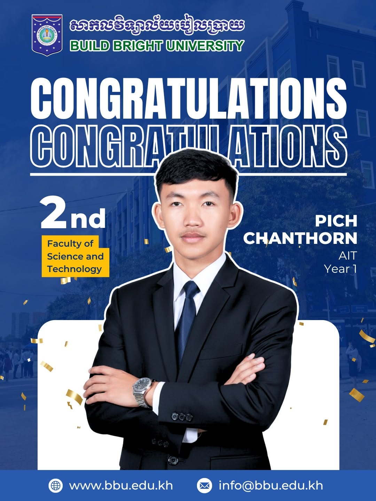
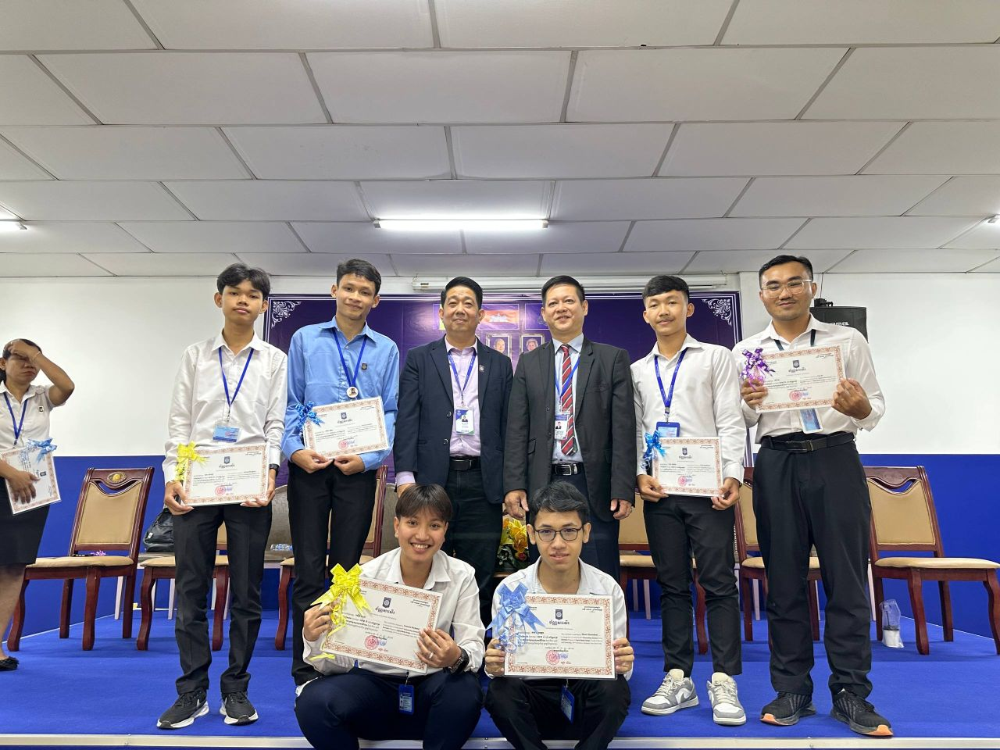
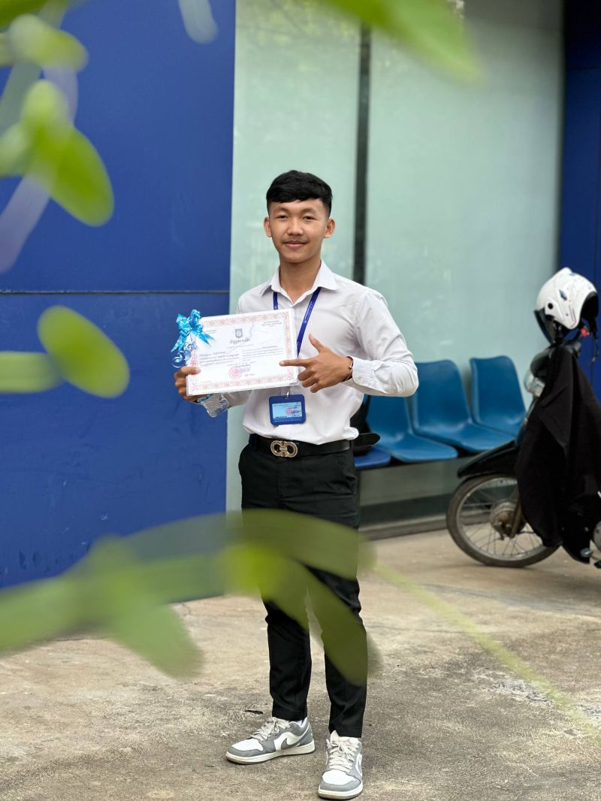
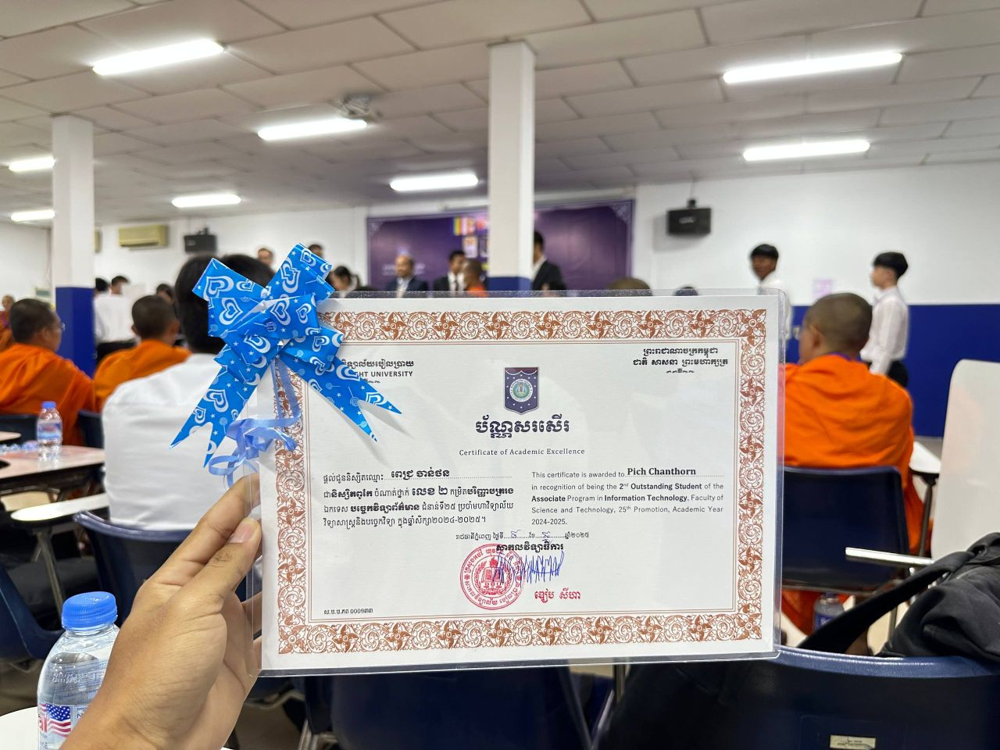

Named 2nd Outstanding Student in IT at Build Bright University
A milestone from the 2024–2025 academic year — recognized by the Faculty of Science and Technology for academic excellence in the Associate Program in Information Technology.
The Recognition
On November 10, 2025, the Faculty of Science and Technology at Build Bright University announced the outstanding students of the 25th promotion. I was named the 2nd Outstanding Student of the Associate Program in Information Technology for the 2024–2025 academic year, and received the Certificate of Academic Excellence at the awards ceremony.
It was my first year in the program, and standing on that stage with the certificate in hand made the long nights of coursework, labs, and self-study feel worth it.
What the Certificate Says
Awarded in recognition of being the 2nd Outstanding Student of the Associate Program in Information Technology.
Faculty of Science and Technology, Build Bright University — 25th Promotion.
Academic Year 2024–2025.
From the Ceremony




What's Next
This recognition is a checkpoint, not a finish line. I'm carrying the same momentum into full-stack web development, Linux administration, and cybersecurity — the topics I keep writing about on this blog.